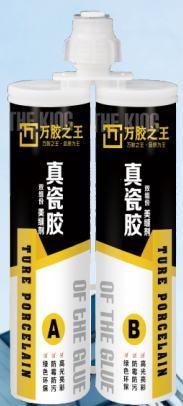

万胶之王-美缝剂 410ml
THE KING OF ALL GUMS - Grout Sealant 410ml
产品特性
Product Features
- 本产品可与金属、玻璃、水泥、瓷砖、石材、木地板等完全粘接成一整体，永久不开裂、不漏水、不褪色、可完全代替玻璃胶、瓷胶；
- Complete adhesion: This product can fully bond with metals, glass, cement, tiles, stone, wooden floors, etc., forming a seamless and permanent bond. It does not crack, leak water, or fade, and can completely replace glass glue and porcelain adhesive.
- 胶体固化后坚硬如瓷，结构强固，具有耐磨、耐腐蚀、耐高温、抗酸碱、抗低温、不收缩、不老化、不变质、无毒无味、防水、防漏、防霉多种特性；
- Hard as porcelain after curing: The gel becomes as hard as porcelain after curing, with a strong structure. It is wear-resistant, corrosion-resistant, heat-resistant, acid and alkali resistant, cold-resistant, non-shrinking, non-aging, non-degrading, non-toxic, odorless, waterproof, leak-proof, and mold-proof.
- 用自动搅拌混合胶嘴，操作简单方便，和普通硅胶玻璃胶一样挤出，自动搅拌均匀，无需手动搅拌；
- Easy to use with automatic mixing nozzle: Simple and convenient operation with automatic mixing nozzle. Similar to ordinary silicone and glass glues, it can be extruded evenly without manual mixing.
- 综合了塑料材、填缝剂、刚性修复复合材料的优点，因此具有超强防水性、耐腐蚀性、耐候性、极小的固化收缩性四大功能。
- Combines the advantages of plastic materials, sealants, and rigid repair composite materials: Therefore, it has four major functions: super waterproofing, corrosion resistance, weather resistance, and minimal curing shrinkage.
主要用途
Main Applications
- 可用于装修工程、防水工程、居家装修、物业维修翻新，也可用于屋顶、坐便器的粘接，具有良好的防霉防水效果，是包缝美化的万能性产品。
- Suitable for decoration projects, waterproofing projects, home decoration, property maintenance and renovation: Can also be used for bonding roofs, toilets, providing excellent mold and water resistance. It is a versatile product for sealing and beautifying seams.